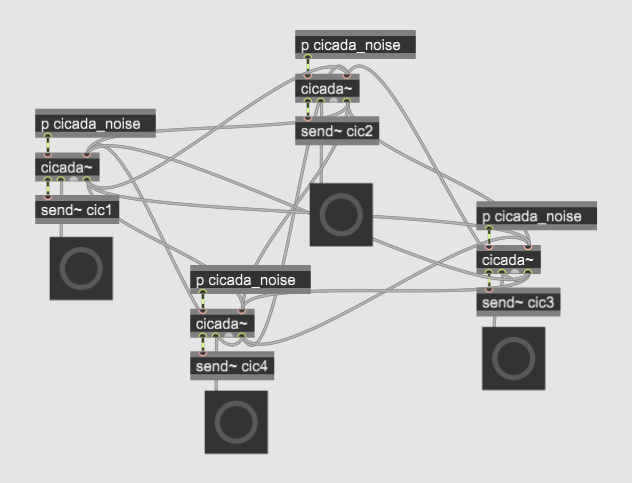

This is a Max/MSP package containing two externals: cicada~ and cicada_chorus_control.
Copyright © 2022 Daniel Brown
Contact: daniel@intelligentmusicsystems.com
Download the kuramoto-cicada folder from here. Copy the (entire) folder to your Max Packages folder (it’s probably somewhere like Documents/Max [version number]/Packages).
The cicada~ object came from a study on simulating the sound of cicadas chirping, as part of a larger interest I have in computationally modelling natural sounds–the stochastic rhythms of nature.
The original paper about it is here, in the Proceedings of the 2022 Xenakis Centenary International Symposium (pp. 394-406), along with a bunch of other really interesting papers on stochastic music and Xenakis.
Cicadas emit “chirps” by expanding and retracting their abdomens, which buckles and unbuckles a hard structure on each side of them, producing a loud noise. The most interesting aspect of a cicada’s chirping is that, in the presence of other cicadas, it will often very quickly synchronize its chirps with the others’. Large groups of cicadas will chirp in near-perfect synchrony, a behavior called “chorusing.”
The cicada~ object models this behavior by implementing the Kuramoto model for systems of coupled oscillators, which has been suggested for how cicadas and other insects acheive this chorusing behavior in the absence of a central “conductor.”
The cicada~ object is essentially an LFO with two types of modifications:
First, it has several stochastic attributes which cicada chirps (and other natural sounds) display, and which you can control in order to layer different degrees of randomness onto your waveforms: amplitude, “chirp” length (i.e. period), length of time chirping, length of time not chirping, and the influence of neighbor chirps on whether a cicada will start or stop chirping. By modifying these variables, you can get a lot of different flavors of constantly changing sonic textures.
Second, you can connect cicada~ objects to one another with patch cords, and then change what’s called the Kuramoto coefficient attribute, which governs how likely the cicadas are to synchronize:
Between these values, you can make really interesting polyphonic and heterophonic behavior emerge.
Originally the cicada~ object was used with a Max subpatch that sent constant filtered white noise into it (based on an example from the excellent book Designing Sound by Andy Farnell), which the object then amplitude-modulated. You can see this in the cicada~.maxhelp file. But you can send any signal you want through the object and thus use it like an LFO. You can also trigger events with it.
Logo attribute: Cicada icons created by Icongeek26 - Flaticon